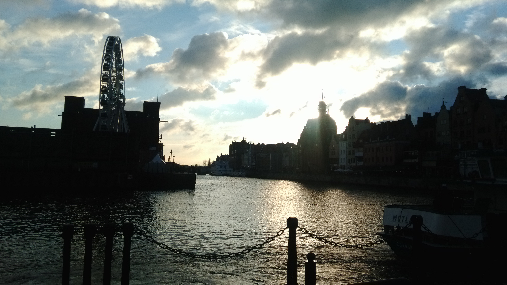
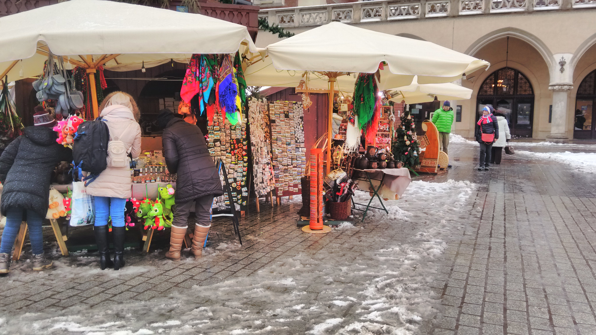
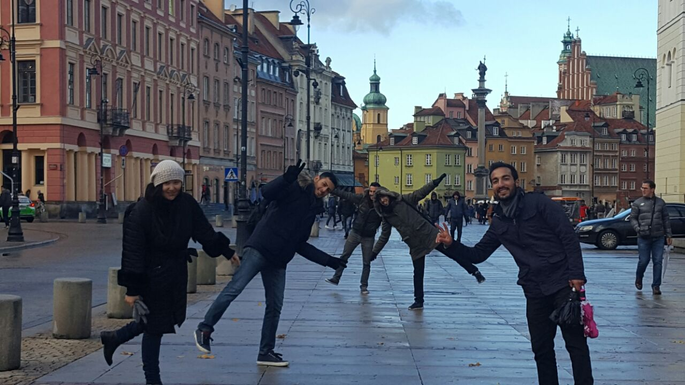
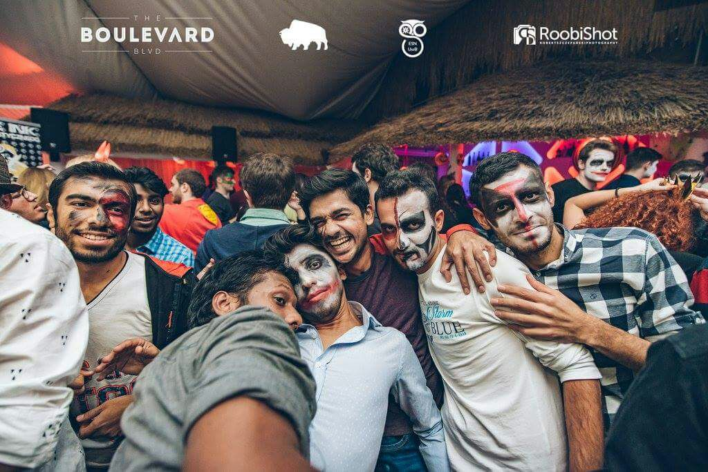
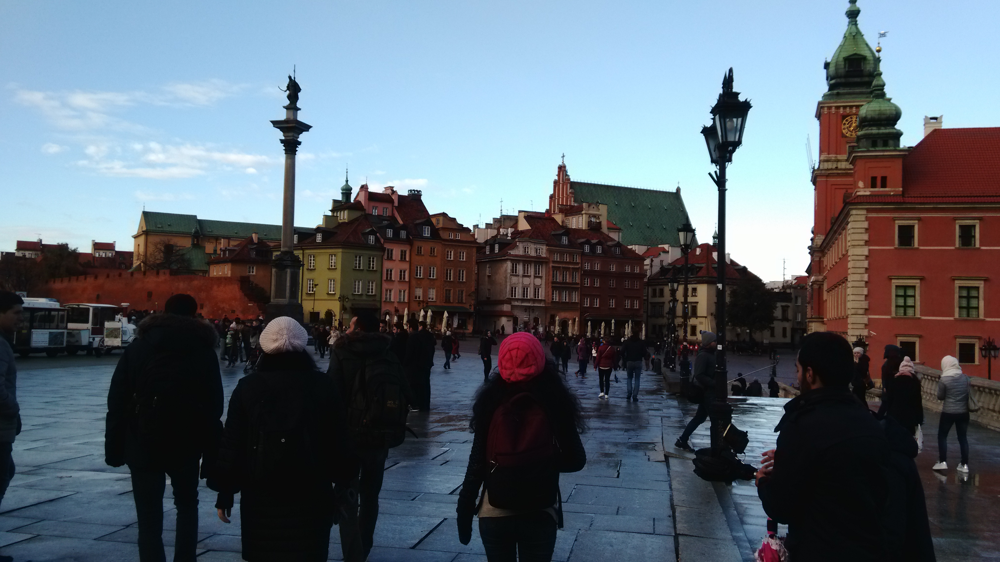

Yahya,26 Aralık 1995'te Mardin'nin Derik ilçesine bağlı olan Derinsu köyünde doğdum.Henüz 1 yaşına girmeden, İstanbul'a taşınmışız.İlkokulu Yenibosna İ.Ö.Okulu'nda okudum ve 2010 yılında mezun oldum. Daha sonra da Füsun Yönder Anadolu Lisesi'nde okudum ve burdan da 2014 yılında mezun oldum. Haziran 2019 da Çukurova Üniversitesi'nde Bilgisayar Mühendisliği(İNG) den mezun oldum
Eylül 2016 ile Şubat 2017 tarihleri arasında Polonya'nın Bialystok şehrinde erasmus yaptım. Yaklaşık olarak 4.5-5 ay orada kaldım.Hayatımda unutamayacağım en güzel 5 ayı diyebilirim.Her şey çok güzeldi.Yeni kültürler,yeni yerler keşfetmek gerçekten çok güzel.Gittiğim şehir olan Bialystok biraz soğuk(-30 dereceyi gördüm) olsada yine de çok güzeldi.Bu süre zarfında İspanyol,Polonya'lı,Hindistan'lı,Yunan,Kazak... arkadaşlara sahip oldum.Hepsi çok güzel insanlardı.Bir daha şansım olsa bir daha giderdim.İMKANI OLAN HERKES GİTMELİ !!!
Bazı Erasmus Fotoğrafları
    